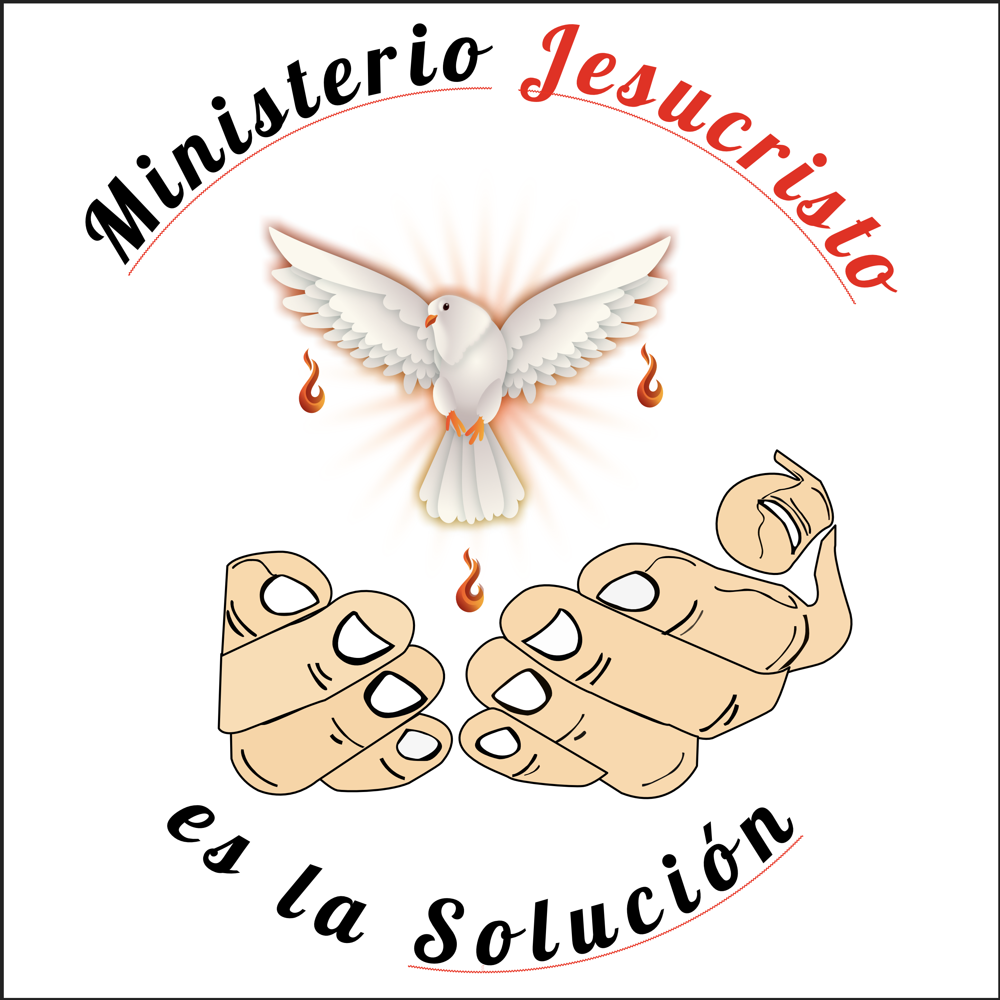
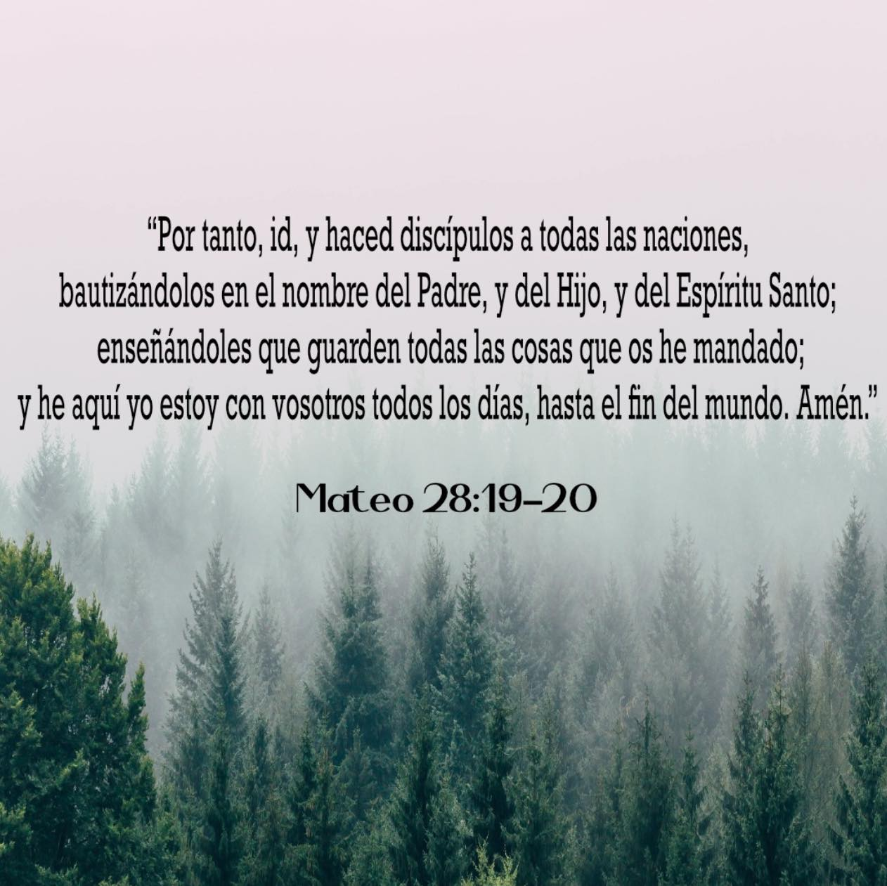
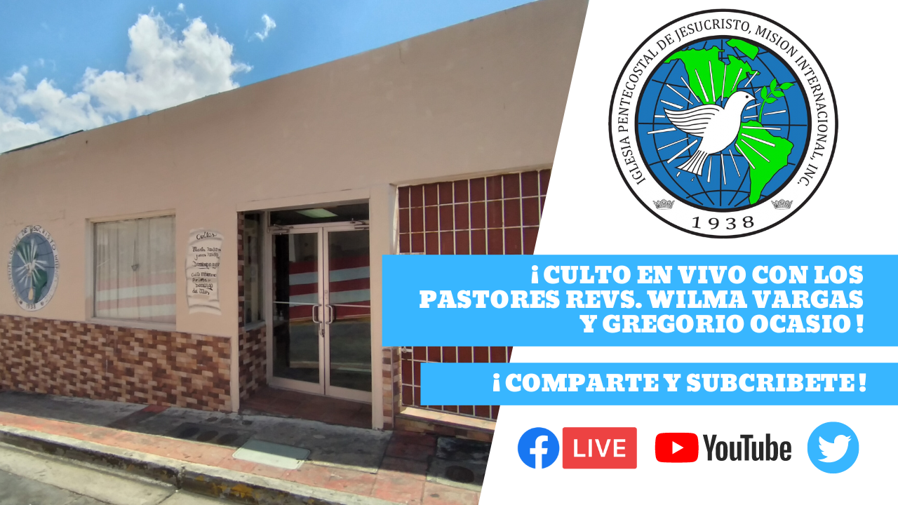
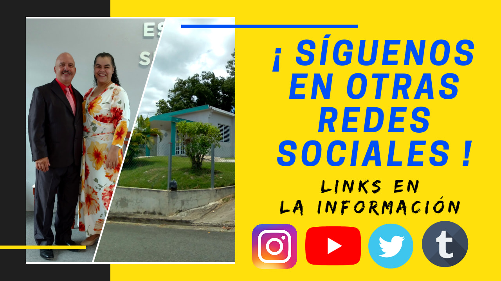
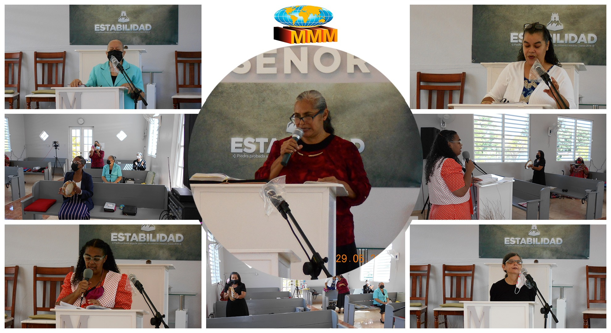
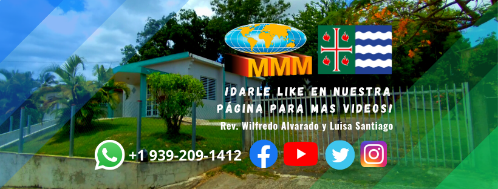
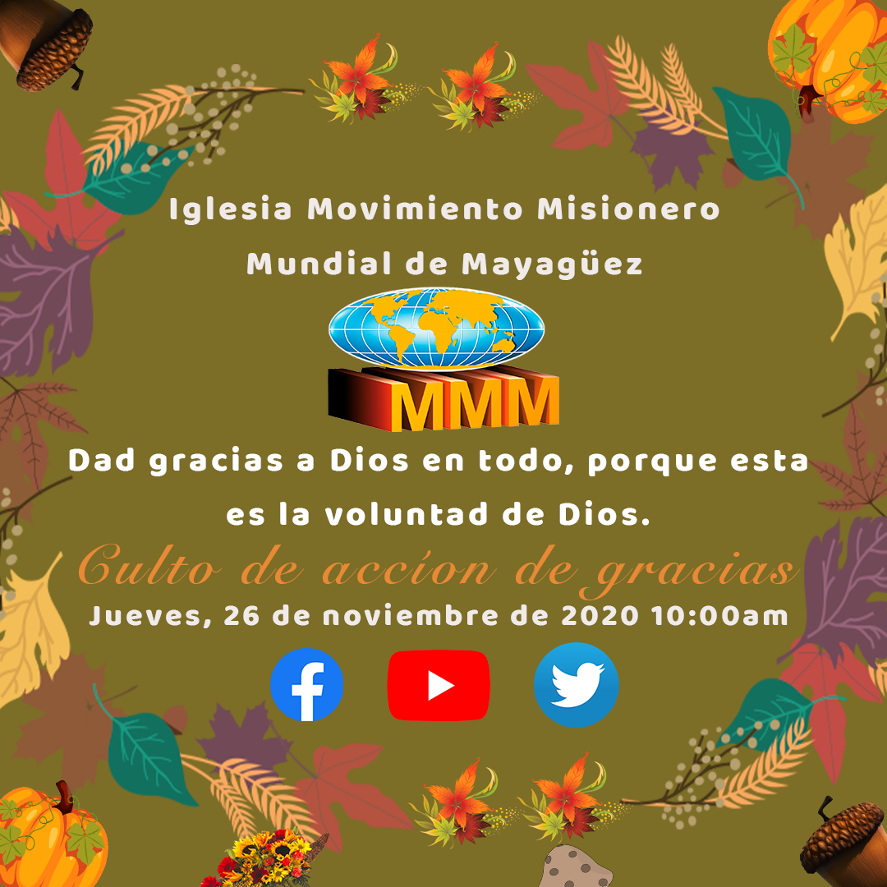
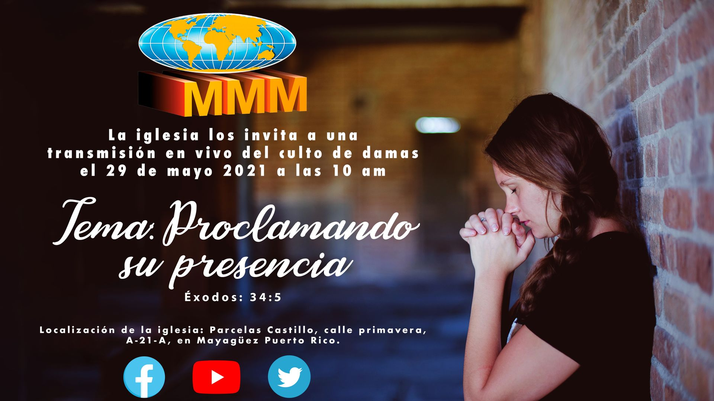
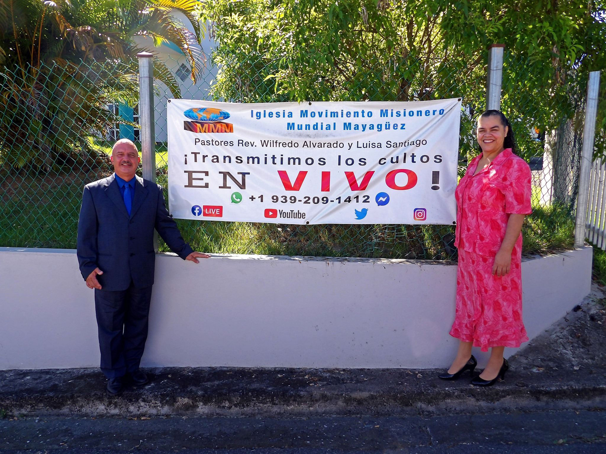

Graphic Design Portfolio - Fernando L. Garza

Official logo for the Jesus Christ is the Solution Ministery.
The ministery needed an official logo made in vectors, so i created this one with the help from freepik.
Presentation of the directive of juviem west area.
I was task by the director to make a socia media promotion for the district.

Bible verse for main theme for juviem during the christmas season.
I was task by the director to search a bible for the west district season theme.
Concept logos for the juviem west district with a red cross and a dark crown.
During the decision on making the official logo for the west district, i want to be simple with the cross in a bright red color and wearing a dark crown that simbolizes Jesus Christ on the cross for salvation.
Concept logos for the juviem west district with a red cross and a gold crown.
During the decision on making the official logo for the west district, i want to be simple with the cross in a bright red color and wearing a golden crown that simbolizes Jesus Christ on the cross for salvation.

Youtube thumbnail for livestreaming.
I create a thumbnail in photoshop for the livestreaming of the church in hormigueros, so people can view the video.

X (Twitter) banner thumbnail.
i create a banner to add for information about the church.
.png)
Facebook banner.
I create this banner for the facebook page of the church.

Church promotion banner for Facebook.
This was one of the designs before installing the banner for the church.

Pictures gallery after the church event in Añasco, Puerto Rico.
I took some pictures from the church event in Añasco, Puerto Rico using canva.

Pictures gallery from the Ladies and gentleman event at church.
I used photoshop to make a picture with the preacher on the center.

Youtube banner.
This was a youtuber banner for the church.

Thanksgiving promotion banner for church.
Making a promoion for church on Thanksgiving day.

Lades church service promotion.
This promotion was created on photoshop for the church service ladies.

Banner for live streaming promotion for the local church.
I created this banner so poeple on the community can search the church on facebook, youtube, twitter (now X) and instagram to see the pictures and watch the live stream.

Promotion for a virtual missionary event during the covid-19 pandemic.
During the pandemic the pastores wanted a poromotion to advise the audience for a virtual missionary event durting the covid-19 pandemic.